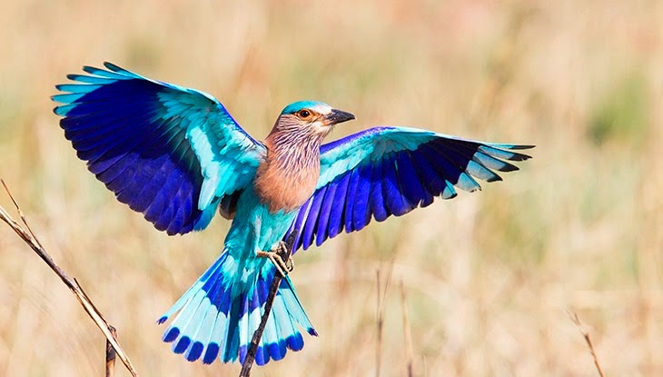
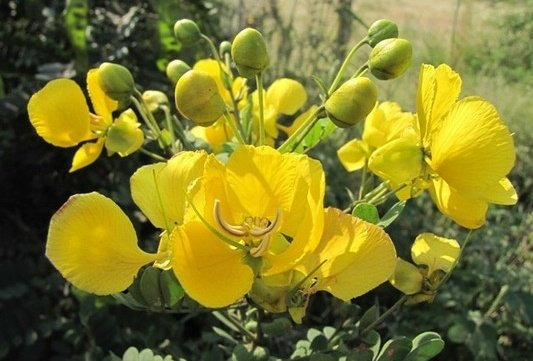
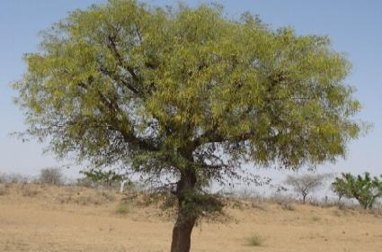

Telangana, also spelled Telengana or Telingana, constituent state of south-central India. It is bordered by the states of Maharashtra to the north, Chhattisgarh and Odisha to the northeast, Andhra Pradesh to the southeast and south, and Karnataka to the west. The area of what is now Telangana constituted the north-central and northeastern portions of Andhra Pradesh for almost six decades, but on June 2, 2014, that territory was calved off to form a separate state. The capital of both Telangana and Andhra Pradesh is Hyderabad, in west-central Telangana.
| State Emblem | Emblem of Telangana | |
| State Animal | Jinka | |
| State Bird | Palapitta |  |
| State Flower | Tengedu Flower |  |
| State Tree | Jammi Chettu |  |
Telangana is situated largely in an upland region of the Deccan (peninsular India). Much of its surface area is occupied by the Telangana Plateau in the north and the Golconda Plateau in the south and is composed of gneissic rock (gneiss being a foliated rock formed within Earth’s interior under conditions of heat and pressure). The average elevation of the plateau area is about 1,600 feet (500 metres), higher in the west and southwest and sloping downward toward the east and northeast, where it meets the discontinuous line of the Eastern Ghats ranges. Drainage is dominated by the basins of the Godavari River in the north and the Krishna River in the south. As a result of erosion, the topography of the plateau region consists of graded valleys with red sandy soil and isolated hills. Black soil is also found in certain parts of the area.
Telangana has three seasons: summer, from March to June; a period of tropical rains from July to September; and winter, from October to February. Summers are warm to hot and dry, with temperatures often nearing or exceeding 100 °F (38 °C). Annual precipitation, which derives largely from the rainy southwest monsoon winds, varies somewhat across the state. It averages about 35 inches (900 mm) per year, although the annual total often varies considerably from the average and can be as little as 20 inches (500 mm) in drier areas. Average minimum temperatures in Hyderabad reach about 60 °F (15 °C) in January and February and usually read in the low 50s F (about 10 to 12 °C) at higher elevations.
Thorny vegetation covers the scattered hills of the plateau areas, while dense woodlands are found in the northeast along and near the Godavari River. The forests, covering about one-fourth of the land area, consist of both moist deciduous and dry savanna vegetation; teak, rosewood, wild fruit trees, and bamboo are plentiful. Elsewhere in the state, neem (which produces an aromatic oil), banyan, mango, and pipal (or Bo; Ficus religiosa) are among the common trees.
Telangana lies at a crossroads between northern and southern India, and it has a diverse population. In general, the state’s various communities are identified more readily by a combination of language, religion, and social class or caste than they are by specific ethnic affiliation. The Dravidian language Telugu is the official and most widely spoken language in the state. A small minority speaks Urdu, a language primarily of northern India and Pakistan. Most of the remaining groups speak border-area languages, including Hindi, Kannada, and Marathi. Lambadi (Banjari) and other languages are spoken by the state’s Scheduled Tribes (the official designation for indigenous minority peoples). The great majority of Telangana’s residents practice Hinduism, while smaller numbers of the population follow Islam. Some one-fourth of the state’s people are members of Scheduled Castes (the official designation for those formerly called “untouchables”) and Scheduled Tribes.
Telangana’s economy was long dominated by agriculture, notably the production of rice. The state’s rivers, particularly the Godavari and the Krishna, have been tapped to provide irrigation for the dry interior, although many areas still depend on the somewhat unpredictable monsoon rainfall. In addition to rice, other important crops are corn (maize) and cotton. The Nagarjuna Sagar multipurpose dam project on the border with Andhra Pradesh, which diverts the waters of the Krishna for irrigation, has substantially increased the production of rice and sugarcane. Rice flour, rice-bran oil, paints and varnishes, soaps and detergents, cardboard and other packaging materials, and cattle feed are all produced from local paddy rice. Other agricultural commodities include chili peppers, sorghum, pulses (peas, beans, and lentils), castor beans, and peanuts (groundnuts), as well as a variety of tropical fruits. Livestock raising and aquaculture are also important, each accounting for a small but still significant component of annual economic output.
The state’s woodlands annually yield high-quality timber, such as teak and eucalyptus. Non-timber forest products—including sal seeds (from which an edible oil is extracted), tendu leaves (for rolling cigarettes), gum karaya (a type of emulsifier), and bamboo—are also important. The state government initiated a major reforestation program.

The Department of Agriculture has been created mainly to provide Agricultural Extension services to farmers and to transfer the latest technical knowledge to the farming community. The objectives of the Department are to assess requirements of agriculture inputs well in advance and to regulate their production and monitor timely supply of seeds, fertilizers and pesticides, implements, credit etc., to farmers. The Department also performs the statutory functions under various acts and regulations (i.e., quality control) to ensure supply of quality inputs i.e., Seeds, Fertilizers and Pesticides to farmers etc.
Rice is the major food crop and staple food of the state. Other important crops are tobacco, mango, cotton, and sugar cane. Agriculture has been the chief source of income for the state's economy. Important rivers of India, the Godavari, Krishna flow through the state, providing irrigation. Apart from major rivers, there are small rivers as Tunga Bhadra, Bima, Dindi, Kinnerasani, Manjeera, Manair, Penganga, Pranahitha, peddavagu and Taliperu. There are many multi-state irrigation projects in development, including Godavari River Basin Irrigation Projects and Nagarjuna Sagar Dam, the world's highest masonry dam.

The Telangana has a number of public and private schools and these are either affiliated to the Board of Secondary Education Telangana or Central Board of Secondary Education (CBSE), ICSE, IB, IGCSE. Government of Telangana is working towards building the excellent school system. Telangana is the 5th place for education passing percentage of 2018. Telangana has implemented various skill set in education system to make improvement on all the areas. The Telangana State Government established the Telangana Minorities Residential Educational Institutions Society in 2015 to provide residential education for children from minority populations.
The economy of any place is also decided by the connectivity and transportation facilities of any place. Places near the coastal areas will have access to natural resources, fish products and shipping advantage. Telangana has a green forest cover with trees having medicinal qualities, some districts are gifted with more waterfalls while some have mineral reserves enough to attract big industrial units!
The Transport Department of Telangana is set up for enforcement of the provisions of the Motor Vehicle Act, 1988 and Telangana Motor Vehicles Taxation Act, 1963 and the rules under it. Though Telangana has a good rail and air transport system, yet road transport is the most important one. It helps the people especially in rural areas to travel from one place to another with much ease.
The Transport Department of Telangana is controlled by the Transport Commissioner who is the Head of the Transport Department and is helped by an Additional Commissioner and four Joint Commissioners, three Regional Transport Officers and one Regional Transport officer
Telangana State is known for its rich heritage in biological diversity distributed in 9 agro climatic regions. Among the flora, the state harbours a total of 2,800 taxa belonging to 1,051 genera under 185 families. This accounts for 16% of the Angiosperms known from India. Of these, 2,071 species belonging to 150 families and 796 genera are Dicotyledons and 729 species belonging to 255 genera and 35 families are Monocotyledons.
Among the fauna, Telangana State is rich with 108 species of mammals that include Tiger, Leopard, Sloth Bear, Giant Squirrel, Hyena, Fox, Wild Dog, Wild Boar, Indian Bison(Gaur), Spotted Deer, Barking Deer, Black Buck, Four-horned Antelope, Blue Bull, Sambar, Mouse Deer, Honey Badger, Civets,Jungle Cats, Otter, Pangolin, Bats, Tree Shrew, Common Langur,etc.